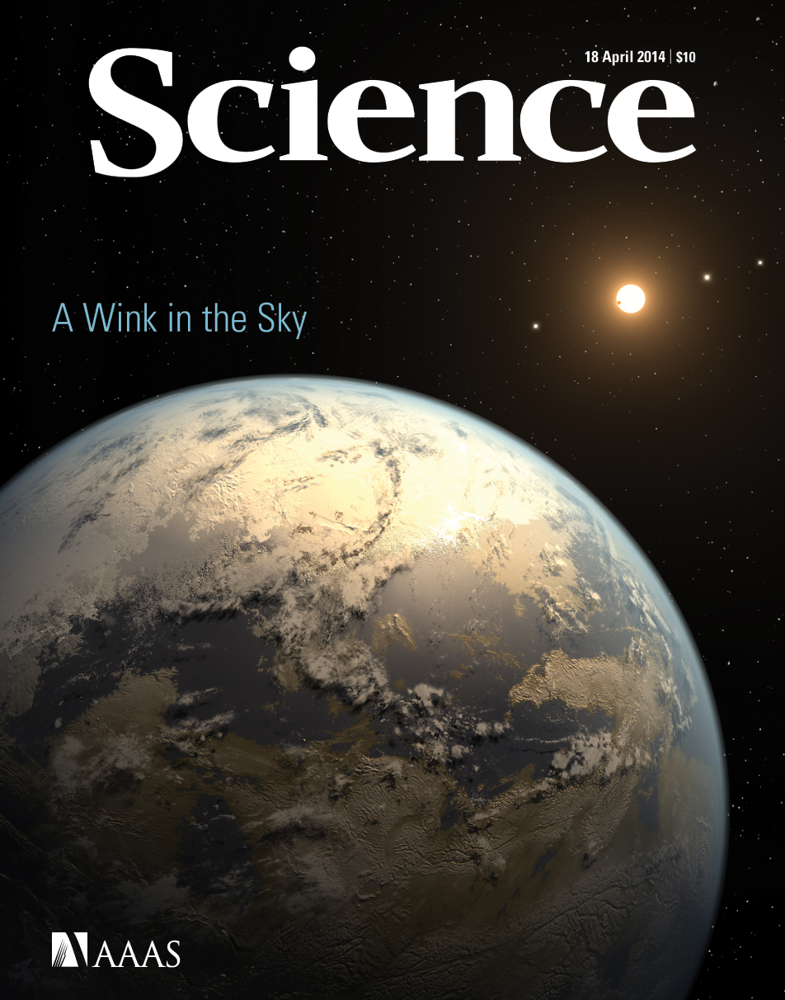
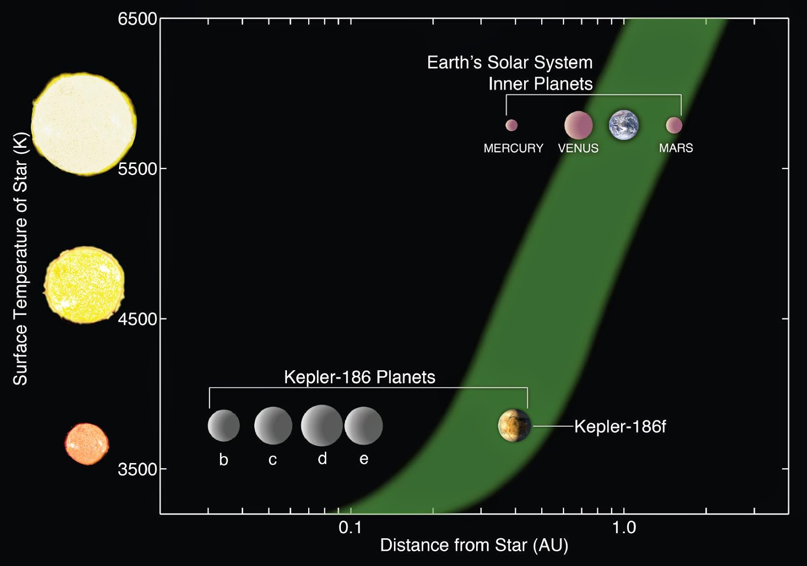
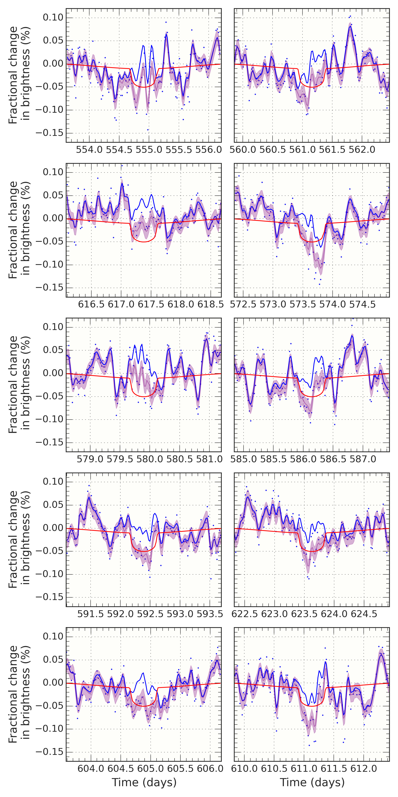
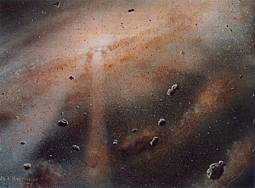

Research Interests
In addition to my programmatic work within the Kepler mission, I also run several highly successful and varied research programs. This research takes three interweaving strands: analysis of data from the Kepler and K2 missions, statistical methods, and simulating the giant impact phase of terrestrial planet formation.
Statistical methods in astronomy

Giant impacts in terrestrial planet formation
Exoplanet science using data from NASA's Kepler and K2 missions
The Kepler spacecraft launched in 2009 with the goal of detecting Earth-sized planets orbiting in the habitable zones of Sun-like stars. I am interested in the detection and characterization of planetary systems. I have been fortunate enough to be involved in a number of papers that represent important milestones on the road to detecting life on other worlds.
One of the more significant of these was the discovery of Kepler-186f that my colleague Dr Elisa Quintana and I announced in 2014. This was the first Earth-sized planet found orbiting habitable zone of another star. Kepler-186f is one of five planets to orbit a M-dwarf that is about half the radius of our Sun.
I've in mid-2013 I was part of a NASA press conference to announce the discovery of two planetary systems: Kepler-62 and Kepler-69. Kepler-62 is a K-dwarf star that host five transiting exoplanets. 
{kind=link}
Statistical methods in astronomy
I work for the Bay Area Environmental Research Institute.
My primary scientific interests lie
Giant impacts in terrestrial planet formation
I use N-body codes to model the late stages of terrestrial planet formation in the solar systems and around exoplanet host stars.
My work on this is primarily in collaboration with Dr Elisa Quintana from NASA Ames. We take the view that chaotic, stochastic processes such as planet formation should be modeled by performing hundred of near-identical simulations to enable statistical inference on formation scenarios.
